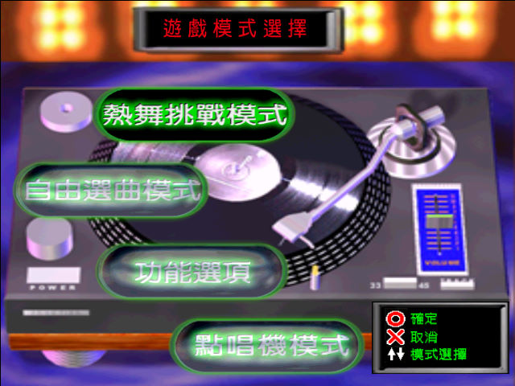
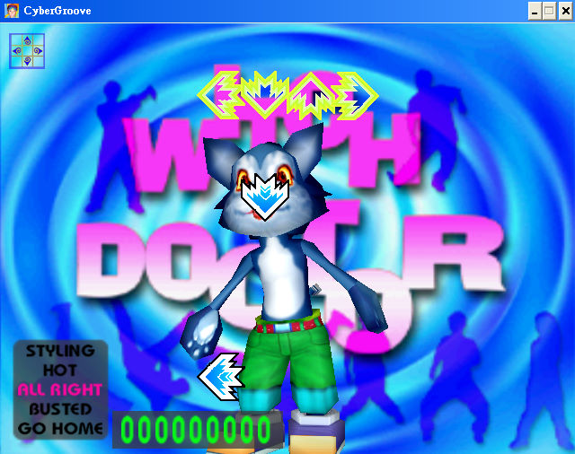

名稱：熱舞2000／台灣熱舞2000 (Cyber Groove／Dance 2000，中文版)
簡介：正先2000年出品的舞蹈遊戲，由第三波代理發行。2001年再推出加強版「特別版（SE，
Special Edition）」 [待補]。


備註：本版為SE特別版
保護：SE特別版無保護，原始版為光碟，破解碼：
CyberGroove.exe
89 85 E4 FE FF FF 81 BD E4 FE FF FF 15 CD 5B 07 74 1A
C7 -- -- -- -- -- 15 CD 5B 07 EB 20 90 90 90 90 90 90
備註：2000年原始版的音軌舞曲為單純欣賞用，遊戲並未使用。
備註：VirtualBox只能使用視窗模式，VMware貼圖有點問題。
密技：開啟隱藏的跳舞模式（六個方向箭的舞曲），修改sam.h：
ms_bExtraModeIsShowed=1
ms_bLastExtraModeIsShowed=1
ms_bJamModeIsShowed=1
ms_bLastJamModeIsShowed=1
檔案：rw2000-old.rar = 初始版